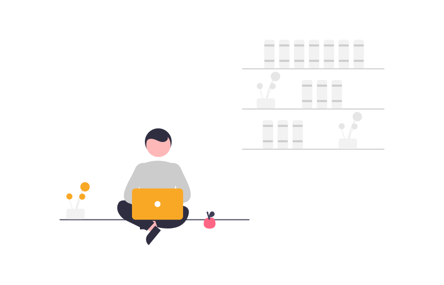

Developer. Atharva.
Lets all work together to put an end to this pandemic.
Help stop the spread.
Why is it important to
Go online?

-
01
A website gives you control over your image.
“Whether you are applying for a new job or starting a side project, most people will search for your name online,” Catorc points out -- something that most of us know to be true, having done our fair share of name-Googling too.
-
02
Building a reach now can help you later.
The more extensive your site is, the better impression you’ll make -- and reaching more people means more connections, opportunities, and so forth.
-
03
A website allows you to stand out from the competition.
“Depending on the industry, focus on highlighting your unique strengths and identifying what things make you stand out. If you are applying for a new role, include your past (and relevant) experience, things you have done (such as volunteer work, projects etc.).”
Things we do to enhance your
Work.
Clients. Testimonial.
I've worked with literally hundreds of HTML/CSS developers and I have to say the top spot goes to this guy. This guy is an amazing developer. He stresses on good, clean code and pays heed to the details. I love developers who respect each and every aspect of a throughly thought out design and do their best to put it in code. He goes over and beyond and transforms ART into PIXELS - without a glitch, every time.

Miyah Myles
Marketing